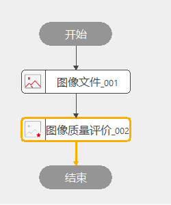
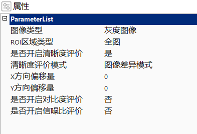

计算图像的清晰度、对比度、信噪比来评价图像质量 。
拍摄前期对拍摄图像质量的评价。
链接好图像，可以设置计算清晰度、对比图、信噪比，其中信噪比需要输入配置图片文件夹来计算几张连续图片。

可以设置链接参数的类型（灰度图像或者彩色图像）、设置ROI类型（全图，矩形ROI）、开启清晰度评价（包含清晰度相关的设置）、开启对比度评价、开启信噪比评价等。

无
| 参数名称 | 参数说明 |
|---|---|
| 类型 | 待检测图像类型，选择支持链接灰度图或者彩色图； |
| ROI区域类型 | 计算图像的区域类型，包括全图/矩阵； |
| ROI | 在矩阵模式下输入的ROI |
| 是否开启清晰度评价 | 计算图像清晰度评价的开关； |
| 清晰度评价模式 | 4种清晰度度量模式：图像差异模式、自相关模式、边缘梯度模式、带通滤波模式； |
| X方向偏移量 | 图像差异模式下，设置/获取X方向的相对偏移量[0,lwidth-1]； |
| Y方向偏移量 | 图像差异模式下，设置/获取X方向的相对偏移量[0,lHeight-1]； |
| X方向标准差 | 边缘梯度模式下，高斯平滑的横向标准差 |
| Y方向标准差 | 边缘梯度模式下，高斯平滑的纵向标准差 |
| 滤波频率下限 | 带通滤波模式下，滤波频率下限 |
| 滤波频率上限 | 带通滤波模式下，滤波频率上限 |
| 是否开启对比度评价 | 计算图像对比度的开关； |
| 是否自动分割 | 设置自动分割还是手动分割； |
| 手动分割阈值 | 手动分割时输入分割阈值； |
| 是否开启信噪比评价 | 计算信噪比的开关； |
| 文件夹路径 | 输入一组用于信噪比计算的图像数据路径； |
| 输入图像 | 通过参数链输入灰度图或者彩色图； |
| 参数名称 | 参数说明 |
|---|---|
| 输入图像 | 输入图像宽度、高度、像素大小； |
| 图像清晰度结果 | 检测到的高斯线数量； |
| 对比度结果 | 检测到的每条高斯线的位置；此参数用于将相关结果显示在图像缺陷（检测到的高斯线）位置处； |
| 信噪比 | 检测到的每条高斯线的平均线宽； |
| 执行结果 | 检测到的每条高斯线的最大线宽； |
| 执行时间 | 检测到的每条高斯线的最小线宽； |
参见“\Samples\图像质量评价工具.gvp”。